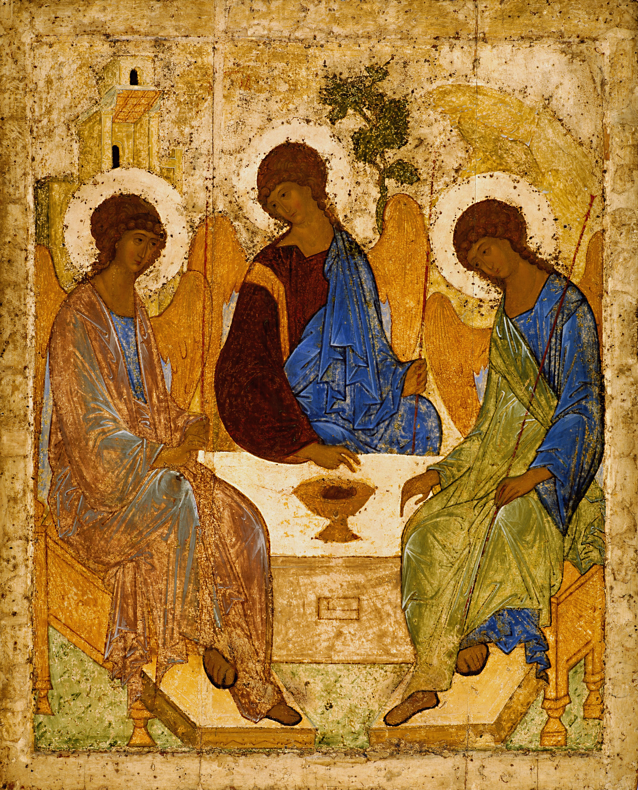
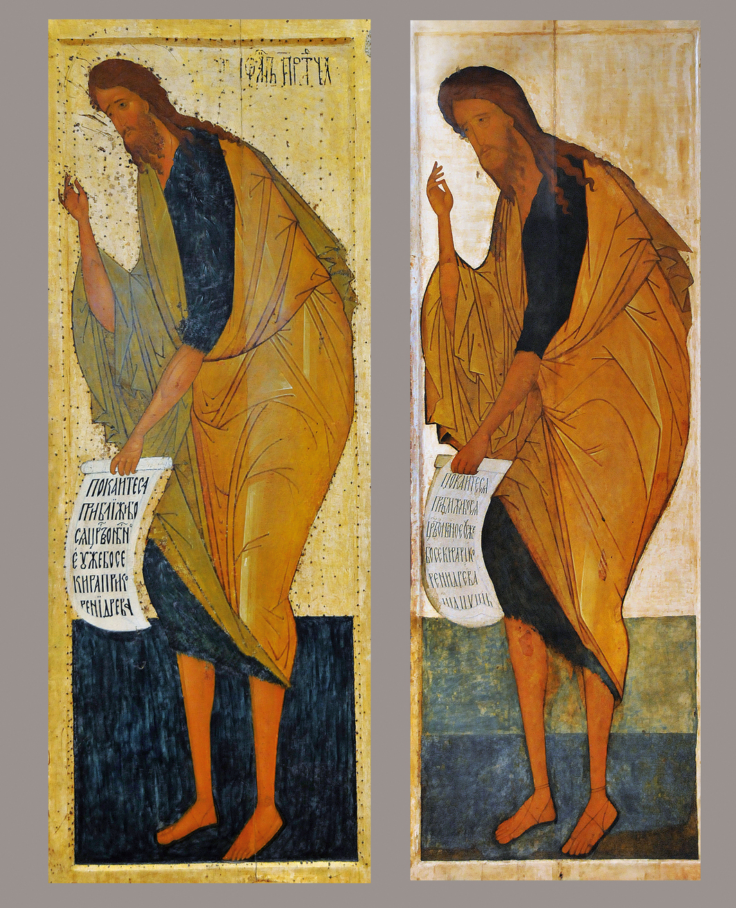
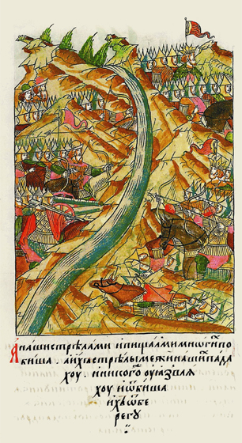
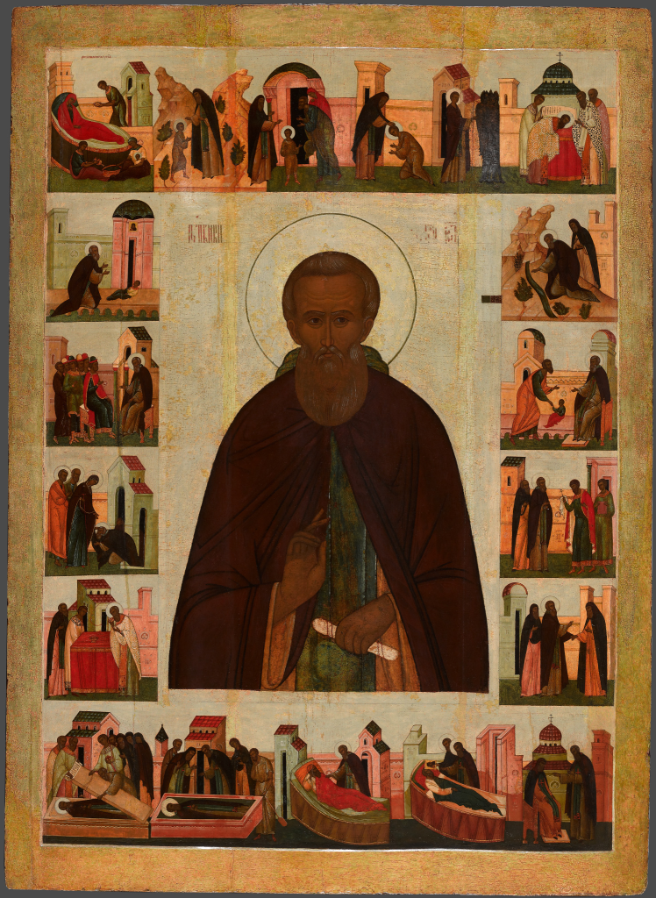
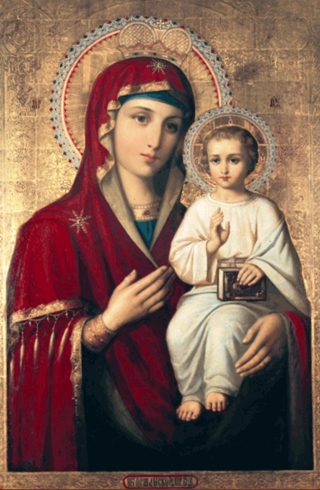

Цель: Проследить путь внутреннего укрепления Руси через образы соборности и государственного самосознания XV века.
XV век стал для Руси временем глубокого внутреннего созревания. Земли постепенно объединялись вокруг Москвы, формировалось новое государственное самосознание, укреплялась вера в собственные силы. Исторический фон этого времени связан с длительными отношениями с Ордой — сложными, переменчивыми, но не уничтожившими ни духовной традиции, ни художественной культуры Руси. Жизнь продолжалась: строились храмы, писались иконы, создавались летописи.
Символом завершения этого большого исторического этапа стало Стояние на реке Угре в 1480 году. Политическая независимость стала итогом долгого внутреннего пути. Но прежде, чем она оформилась в исторический факт, она уже существовала в образах.

Созданная в 1425–1427 годах, перед зрителем — не просто библейский сюжет, а образ гармонии, доведённой до прозрачности. Три ангела сидят за трапезой, их фигуры образуют замкнутый круг. Этот круг не геометрическая формальность — он дышит. Линии плавно перетекают одна в другую, взгляды тихо перекликаются, жесты не спорят, а продолжают друг друга.
Цвета — светлые, очищенные, будто омытые мягким светом. Голубые, золотистые, зелёные оттенки не контрастируют, а звучат вместе, создавая ощущение спокойствия и внутренней ясности. В этой иконе нет тревоги, нет резкости — есть соборность, то есть согласие, в котором каждый остаётся собой и одновременно принадлежит целому. В контексте XV века круг ангелов воспринимался и как образ согласия русских земель, способных действовать вместе.

Дионисий, один из крупнейших мастеров второй половины XV столетия, придаёт образам особую стройность и возвышенность. Его «Васильевский чин» (1479–1481) словно вытянут вверх — фигуры удлинённые, лёгкие, как пламя свечи. Они стоят стройным рядом, образуя ритм, в котором ощущается порядок.
Если у Рублёва гармония кажется камерной и созерцательной, то у Дионисия она приобретает масштаб и торжественность. Это уже эпоха Ивана III — времени, когда Москва ощущает себя центром объединённой державы. Художник добивается удивительной лёгкости: стены не давят, они как бы растворяются в сиянии красок.

В миниатюрах Лицевого летописного свода нет чрезмерной драматизации: княжеские дружины, река, противоположный берег. Пространство природы играет почти равную роль с людьми. История вписана в пейзаж, как часть естественного хода вещей. Даже в сюжетах, связанных с освобождением от ордынского влияния, акцент смещён с конфликта на результат — на состояние мира и уверенности. В них чувствуется завершённость большого пути.

Сергий не был политическим деятелем в прямом смысле, но его влияние на объединение земель было огромным: через монастыри, через воспитание учеников, через утверждение идеала смиренной, но крепкой веры. «Троица» стала художественным выражением этого идеала — идеала единства без насилия, силы без жесткости.

В этой фреске (около 1410 года), приписываемой мастеру, лики отличаются особой нежностью. Взгляд Богоматери лишён драматизма — в нём тихая забота и внутренняя устойчивость. Линии лица лёгкие, почти невесомые, будто художник стремится убрать всё лишнее, оставив только свет.
От созерцательной гармонии рублёвской «Троицы» к возвышенной стройности Дионисия — перед нами путь внутреннего укрепления. История и искусство не противопоставлены друг другу: они развиваются параллельно, отражая постепенное формирование самосознания.
Светлые краски, мягкие линии, вытянутые фигуры — всё это не просто художественные приёмы. Это язык времени, в котором Русь осознавала себя единой, самостоятельной и духовно цельной. И этот язык продолжает звучать через века — тихо, но уверенно.